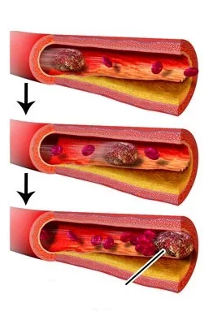
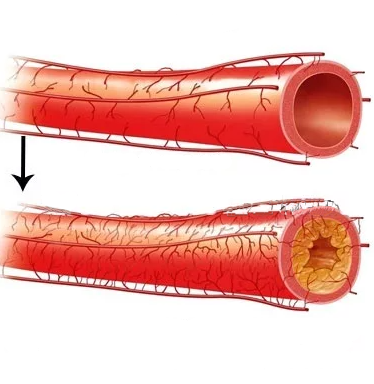

Новости здоровья
Минздрав Болгарии: в стране резко повысилась смертность от гипертонии.

Стойчо Кацаров
Министр здравоохранения Стойчо Кацаров заявил: за половину 2021 года смертность от последствий гипертонии превысила аналогичную статистику за весь 2020 год. По мнению министра сегодня проблема гипертонии становится особенно острой для жителей Болгарии.
Чего стоит опасаться людям после 40 лет? Можно ли предотвратить течение гипертонии? Какие препараты показывают наибольшую эффективность в борьбе с повышенным давлением? Мы решили обсудить эти вопросы с одним из самых известных специалистов – профессором и кардиологом Медицинского центра Европейской кардиологии Яной Симовой.
Профессор Симова – один из ведущих специалистов в области эхокардиографии.
Она состоит в Европейской ассоциации сердечно-сосудистой визуализации и Европейском обществе кардиологов. За свою медицинскую карьеру доктор опубликовала более 330 научных публикаций, выступала на международных конгрессах, посвященных проблеме гипертонии, удостоилась престижных наград Союза ученых Болгарии за высокие научные достижения.
Гипертония – тихий убийца?
- Профессор Симова, здравствуйте. Жители нашей страны наверняка знают о Вас, ведь Вы уделяете время не только научным исследованиям, но и повышению уровня медицинской просвещенности населения. Скажите, насколько актуально заявление главы Минздрава Болгарии о повышении уровня смертности?
Здравствуйте. Да, я действительно стараюсь сделать медицинское сообщество более открытым, посещаю ТВ-шоу и пишу статьи для газет и журналов. К сожалению, это вынужденная мера. Не все наши сограждане уделяют время своему здоровью. Более 57% пациентов, обращающихся в Медицинский центр Европейской кардиологии, приходят к нам слишком поздно. Немногие могут распознать проблему, занимаются самолечением или откладывают на потом. Я стараюсь разъяснить важность своевременного определения диагноза, профилактики и лечения.
Смертность от гипертонии в сравнении с общей смертонстью от сердечно-сосудистых заболеваний в Болгарии 2020 год
Общая смертность
Смертность от гимертонии
Что касается заявления главы Минздрава: вынуждена признать, что это соответствует действительности. Я также могу добавить, что признаки гипертонии начали появляться даже у 30-летних людей. Более того, количество пациентов, обращающихся с множественными симптомами гипертонии, неуклонно растет.
- С чем это может быть связано?
Фото с Европейской конференции кардиологов 2021
- На Европейской конференции кардиологов, где присутствовали и болгарские эксперты в области сердечно-сосудистых заболеваний, обсуждался этот вопрос. Было выделено три основных причины:
-
Пациенты не могут распознать гипертонию.
Гипертония – опасное хроническое заболевание, которое может протекать незаметно для пациента. К примеру, у человека болит голова, и он связывает головные боли с усталостью, шейным остеохондрозом, физическими нагрузками, даже не подозревая, что у него началась активная стадия развития гипертонии.
-
Привыкание к классическим препаратам.
Сегодня гипертония лечится медицинскими препаратами, которые были известны еще пару десятилетий назад. Во-первых, они не борются с заболеванием, а лишь устраняют поверхностную симптоматику. Во-вторых, что подтверждается научными исследованиями, подобные препараты имеют накопительный эффект. То есть, сердечно-сосудистая система человека привыкает к ним, и это сказывается на снижении эффективности лечения.
-
Пандемия COVID-19.
Одно из последствий новой коронавирусной инфекции – сгущение крови и повышенный риск тромбозов. Соответственно, это значительно повышает риск тяжелых гипертонических последствий: даже в том случае, если пациент переболел COVID-19 в легкой форме.
К ЧЕМУ ПРИВОДИТ ГИПЕРТОНИЯ?
Инфаркт миокарда
Инсульт
Почечная недостаточ- ность
Деменция
Тромбоз
Поражение сосудов
Ухудшение зрения
Артериальная гипертония приводит к смерти!
Каждая из указанных причин повышает риск более тяжелого течения гипертонии на 30%. Соответственно, их комплексное воздействие приводит к очень высокому риску – 90%. Представьте: 9 из 10 человек имеют риск проявления инсульта, ишемической болезни сердца, почечной недостаточности. И это все из-за обычного, как считают многие пациенты, высокого артериального давления.
- Как рядовому пациенту распознать гипертонию?
- Для этого нужно прислушаться к своему организму. Поскольку организм человека является сложной и взаимосвязанной системой, он пытается подать сигналы даже на самой ранней стадии гипертонии.
Системы органов человека
Симптомы гипертонии
Нервная система
- Головные боли, головокружение
- Нарушение памяти
- Приступы пульсации в голове
- Тревожность, приступы раздражительности
Кровеносная система
- Учащенное сердцебиение
- Онемение пальцев ног и рук
- Покраснение лица, одутловатость
- Опухание рук
- Отеки по утрам
Опорно-двигательная система
- Остеохондроз
- Протрузия дисков
- Грыжа межпозвоночного диска
- Радикулит
- Сколиоз
- Примечание: любые деформации позвоночника могут привести к передавливанию сосудов и повышению давления.
Выделительная система (указанные симптомы характерны для 2 стадии гипертонии)
- Проблемы с мочеиспусканием
- Ощущение переполненности мочевого пузыря
Покровная
- Ощущение озноба
- Отечность лица и конечностей
- Даже небольшая головная боль или головокружение могут свидетельствовать о гипертонии?
- Да. Вся симптоматика гипертонии делится на три стадии. На первой стадии могут происходить небольшие колебания артериального давления, но если заболевание не корректировать, то симптомы начинают прогрессировать. В результате пациент с третьей стадией гипертонии может ощущать нарушение координации движений, у него появляется слабость в конечностях, наблюдаются проблемы с работой головного мозга и всех сосудов. Опасность гипертонии заключается и в том, что от третьей стадии заболевания до инсульта, инфаркта и ишемии может пройти всего несколько месяцев.
- Можно ли предотвратить тяжелое течение гипертонии и избавиться от симптомов, доставляющих дискомфорт?
Тромоэмболия
Тромб закупорил просвет сосуда
Атерослероз
На внутренне стенке артерии формируется атеросклеротическая бляшка, которая сужает просвет артерии и затрудняет коровток
- Нужно понимать первопричину самой гипертонии. Неправильное питание, злоупотребление алкоголем и табаком, недостаточная активность, неблагоприятная экологическая обстановка – все это приводит к изнашиванию сосудов, появлению в них холестериновых бляшек, возникновению токсинов. Именно кровеносные сосуды являются основным источником жизненно важных компонентов и веществ в органы человека. Они располагаются по всему телу человека и их задача – перекачивать кровь через сердце.
Всего за одни сутки сердце перекачивает 7 000 литров крови. За год – больше 2 500 000 миллионов литров. Предположим, что кровеносные сосуды человека немного загрязнены, поскольку в них откладываются токсины и холестерин. Сосуды транспортируют кровь вместе с этими «загрязнениями», заставляя сердце не только перекачивать большие объемы крови, но и фильтровать их. Соответственно, это оказывает колоссальную нагрузку на сердце, что приводит к повышению артериального давления.
Давление, в свою очередь, оказывает негативное влияние на каждый внутренний орган человека. Именно по этой причине гипертонию называют тихим убийцей – все это происходит внутри человека, и он даже может не подозревать об этих процессах.
Очищенные сосуды со стабильным кровотоком
- Как защитить себя и своих близких от гипертонии?
- Большинству пациентов назначается медикаментозное лечение. Такая терапия очень часто используется и в качестве профилактики. Спектр препаратов очень широк, я расскажу о некоторых из них.
Первый препарат – Nutrocardia. Он начал использоваться во врачебной практике 15 лет назад. Доказанная эффективность данного препарата колебалась на уровне 30% - только у 3 пациентов из 10 наблюдалась положительная динамика.
Второй препарат – FitoCardios. Он изготавливался на основе Nutrocardia, но имел отличие в виде замененных растительных компонентов. Это позволило достичь повышенной эффективности в 50%.
Третий препарат – Cardiofort. Он был создан группой ученых после международной конференции кардиологов. Экспертами была озвучена всемирная проблема гипертонии и перед фармацевтическими компаниями поставили задачу по поиску оптимального соотношения компонентов и созданию препарата с высокой эффективностью. Несколько фармацевтических компаний объединили свои наработки, в результате чего было создано это средство. В ходе лабораторных исследований была выявлена эффективность, достигающая 98%.
100% натуральный состав
Cardio fort
+
Fito Cardios
-
Nutro cardia
-
Отсутствие побочных эффектов
Cardio fort
+* *в 2% наблюдается легкая форма аллергии из-за индивидуальной непереносимости компонентов
Fito Cardios
Головные боли, боли в загрудинной области, почечная недостаточность
Nutro cardia
Мигрень, цереброваскулярные заболевания, нарушения ритма и проводимости сердца, сердечная недостаточность, тошнота
Сочетание с другими лекарственными препаратами
Cardio fort
+
Fito Cardios
+* *зависит от составных веществ
Nutro cardia
-
Негативное воздействие на физическое состояние
Cardio fort
Отсутствует
Fito Cardios
Возможна повышенная утомляемость
Nutro cardia
Возможны судороги, не рекомендуется употреблять при управлении транспортными средствами
Соответствие международным фармакологическим стандартам
Cardio fort
+
Fito Cardios
Частично
Nutro cardia
Частично
- То есть, своим пациентам Вы рекомендуете препарат Cardiofort?
- Своим пациентам я рекомендую препарат с доказанной эффективностью и хорошими результатами. Лабораторные исследования показали, что таким препаратом является Cardiofort.
- Вы можете рассказать немного подробнее про этот препарат?
- Главное отличие – состав из ингредиентов растительного происхождения, которые усваиваются организмом человека. В отличие от синтетических медикаментов, Cardiofort развивает гипотензивный эффект с первого употребления, а не вызывает привыкания.
Употребление Cardiofort решает несколько задач: препарат не просто нормализует артериальное давление, а устраняет причины, приводящие к прогрессированию гипертонии. Он снижает концентрацию холестерина, оптимизирует работу сердечно-сосудистой системы, укрепляет сосудистые стенки. Также было доказано, что все показатели стабилизируются плавно, не приводя организм в состояние шока.
- Вы упомянули про натуральные ингредиенты, из которых изготовлен препарат. В чем их уникальность?
- Уникальность заключается в тщательно выбранном сочетании компонентов. Каждый ингредиент решает определенную задачу, что позволяет препарату оказывать комплексное положительное воздействие на организм:
Вытяжка из тиамина.
Обеспечивает защиту от анемии, насыщает ткани питательными веществами, оказывает положительное влияние на сократительную способность сердечной мышцы.
Редуцированная форма Витамина С.
Поддерживает эластичность кровеносных сосудов, защищая их от повреждений токсинами и холестерином, стабилизирует работу свертывающей системы крови.
Арджуна (арджуновые и элогиновые кислоты).
Оказывает общее тонизирующее воздействие на организм, нормализует работу сердца и дыхательной системы, восстанавливает нормальный уровень коронарного кровоснабжения.
Селен.
Защищает клетки сердечной мышцы от токсинов, оказывая антиоксидантное воздействие, нейтрализует атеросклеротические бляшки.
Экстракт косточек грейпфрута.
Выполняет антибактериальную и противовирусную функцию, способствуя очищению и кровеносных сосудов, и самого кровотока.
- Препарат доступен для жителей Болгарии?
- Да, его можно приобрести на официальном сайте производителя. Минздрав Болгарии заключил договор с производителем и создал специальную льготную программу.
Также Минздрав принял решение о компенсации для наших сограждан: жители Болгарии могут заказать препарат с 50% скидкой, а остальные 50% производителю оплачивает наше министерство здравоохранения. Скидка доступна каждому жителю Болгарии при заказе препарата CardioFort через официальную форму, расположенную ниже. Таким предложением можно воспользоваться на официальном сайте в течение 14 рабочих дней – до ...
- Спасибо за разъясняющую беседу. Надеемся, что эта информация будет полезна нашей аудитории.
Официальная форма заказа
№2341 от ..
Заказать CardioFort по сниженной цене:
256000 pesos
128000 pesos
Чтобы заказать “CardioFort” введите ниже свои имя, номер телефона и нажмите кнопку ”Заказать”
*Срок специального предложения истекает ..
Комментарии
Franciszek Kowalski Принимаю CardioFort уже полгода, заметил улучшение самочувствия, да и давление уже не скачет, как раньше.
4
..
Dawid Tomczyk Подскажите, какой курс приема у вас был?
..
Franciszek Kowalsk Franciszek Kowalski. Во время лечения принимал 30 капель препарата, потом в качестве профилактики врач рекомендовал снизить до 20 капель.
..
Dominika Morawska Я принимала по 15 капель, но у себя нашла только один симптом. Решила перестраховаться и это помогло: головокружение исчезла. Посоветовала своей сестре, у нее тоже положительный опыт применения.
..
Mieczysław Jastrzębski Подскажите, а как быстро стоит ожидать результата?
..
Maria Brzezińska Мне мой лечащий врач говорил, что срок действия препарата зависит от особенностей организма. Кто-то чувствует улучшения на следующий день, а у других симптомы исчезают через две недели.
..
Bogusława Постоянно покупала своему отцу таблетки от давления, потратили очень много денег. Говорит, что CardioFort единственный препарат, который ему помог.
10
..
Wiktoria Turek Мучаюсь с бессонницей, можно ли его принимать?
..
Milena Kołodziejczyk Да, можете употреблять CardioFort . По себе могу сказать, что стала спать лучше. Если он и влияет на сон, то положительно.
..
Dagmara Muszyńska Да, подтверждаю, нормализовалось не только давление, но и сон.
..
Szymon Dąbrowski В больнице мне поставили 2 степень гипертонии, долго лечился в стационаре. Принимаю CardioFort всего 10 дней, и о бследования уже показывают улучшения. Буду заказывать еще.
9
..
Michał Zieliński Кто-нибудь знает, препарат доставляется до всех воеводств или есть ограничения?
43
..
Aleksandra Czerwińsk Да, мои родственники заказывали в Kraków, Olsztyn, Łódź, Białystok и другие города. Всем приходило.
..
Szymon Świderski А доставка платная?
..
Daniel Skrzypczak Нет, сам заказываю четвертую партию, доставка всегда бесплатная.
..
Roman Cybulski В Варшаву посылка пришла за неделю. Заказывал маме в Катовице, пришло за полторы недели. Думаю, что ограничений нет, просто для доставки потребуется немного больше времени.
..
Zofia Maciejewski Профессор, хочу вас поблагодарить от имени всей нашей семьи. Моя тетя страдала от гипертонии, никакие лекарства не помогали, давление постоянно скакало и мучали головные боли. За три месяца приема CardioFort самочувствие сильно улучшилось! Решила заказать препарат и себе, пью в качестве профилактики.
69
..
Magdalena Tomczak Подскажите, вы принимали до, после или во время еды?
..
Zofia Maciejewski Моя тетя принимала после еды, по 30 капель на стакан воды, как и указано в инструкции. Но я сама принимаю утром и вечером.
..
Maja Milewska А можно ли снижать дозу, или нужно дождаться улучшений?
..
Zofia Maciejewski В инструкции указано именно 30 капель, а полный курс составляет 3 месяца. Думаю, в течение этого срока нужно придерживаться рекомендаций, а потом понемногу снижать.
..